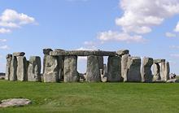
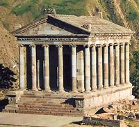
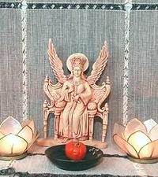
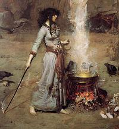

This page is a side branch from our A Pagan Reality page. It's purpose is to provide familiarity of how Sacred Space is established, and why. It is not at all designed as instructions.
Sacred Places
 Many Sacred Places of ancient times are still noted for being sacred, and need no castings or such to make them sacred. Many people travel to such places for special needs, or to commune with spirits, deities and ancestors. These places have so served for thousands of years, and through many cultures. Their sacredness can often be felt as well by persons who are not Pagans.
Some have monuments built by humans, but many are natural places with as little human contribution as possible. The most famous Sacred Space in the Western World is Stonehenge, in England. Modern Druids like to hold ceremonies there, and the ancient Druids probably held it as a sacred place as well, but it was sacred for thousands of years before the ancient Druids appeared. It was built by a people almost nothing is known about, except they were very good at astronomical mathematics, and at moving rocks - and that they very much valued Sacred Space.
Temples
 Temples are powerful Sacred Places purposely erected by a people. The Pagan temples of Europe and the Near East were many, widespread, and of diverse construction. Christians feared them and destroyed them all, slaughtering many of those who had used them. They were thorough, leaving little for the Muslims to destroy.
Temples will not be rebuilt on anything like the scale of ancient times - today there is little financial basis for it. In Italy and Greece a number of Temples have recently been built, but, while substantial, they have been the projects of individuals. Even the Christians are now having a hard time maintaining their churches (Christian temples). Their parishioners are loosing the Fear of Hell, and don't see the need to pay their way out of it. Pagans offer no threats, and make no attempt at such extortion.In the ancient world, statues and symbols within the temples served as portals for communication with the deities or spirits to whom they were dedicated. The classical temples of the Mediterranean civilizations are the most famous, but they weren't all sweetness and light. These impressive temples were built as public displays of wealth and power, by kings and conquerors. They were built almost entirely by slave labor, drawn from the conquered.
Modern Pagans have no desire to re-establish slavery - they leave that to the Southern Baptists, who still long for it. Further, The wealthy and powerful of our day have zero interest in public works at their expense, and are very resentful of being taxed by governments to finance works benefiting the public.
Here in North America, with no temple tradition, our Temples must be private, or like a nomad's yurt, erected as needed, and taken down when the need is finished.
Altars & Shrines
 The household Altar is the primary sacred space for most Pagans today, most of whom belong to no Coven, Circle, Temple or other organization. The altar can vary from being so simple others won't even notice what it is, or elaborate, or even large and elaborate, depending on the space, needs, and intent of the person who has dedicated it. It can even be portable. The Altar is definitive between Pagan and "Spiritual but not Religious".
An Altar is a workspace, whether for meditation, or for magic. It is a dynamic space that may change with the season, or the task at hand. If it is dedicated to a Deity, it should have an image or statuette of the Deity to act as a portal for communication with that Deity. Offerings are are often made at the altar, and prayers.
An Altar is appropriate for Deist and non-Deist Pagans alike. Even for atheist Pagans (yes, there are those), as a focus for their self development. Witches often dedicate their Altars to the goddess Hekate (say "Hekatee"), who carries two torches to light the way through the darkness, as well as may other attributes.
A Shrine is much like an alter, but more for commemoration and giving thanks. It can be dedicated to household spirits, ancestors, a Deity, or an honored person. It is likely to be a place for meditation, but is less dynamic than an alter. Offerings and prayers may also be submitted at a Shrine. Both Altars and Shrines are sacred spaces that have a place in the Pagan household.
Casting Circles
 Casting a Circle is a way to define Sacred Space in a temporary manner. It is well known from use by Wiccans and similar practitioners, for their periodic group rituals. Similar Castings are used in many forms of Paganism, Witchcraft, Ceremonial Magic, and Sorcery.
The "Circle" may be envisioned as a sphere, circular wall, or cone, depending on practice. It serves to keep unwanted influences out, or to invite desired influences in, or both. It is also done to change the emotions, expectations and state of mind of those within it, whether a group or a solo practitioner.
Once Cast, the circle is ritually cleansed, often with smoke and incense, but also in many other ways. Then the ritual may begin. A room permanently dedicated to Sacred work may not need a circle cast every time, but the dedication ceremony will probably be in very similar form, and it will be similarly cleansed before a ritual. A properly concepted home altar is a permanent sacred space, and will usually need only cleansing, without any formal casting.
The Wiccan casting always features calls to the four directions, and is closely tied to the Wheel of the Seasons, which is at the very root of Wiccan practice. This is, however, not the only way Circles are Cast. Some are entirely circular, or spherical, without a call to the directions, or the seasons. Some may call the Elemental Spirits rather than the seasonal directions.
Casting Circles is a very serious matter to Wiccans, and to those of similar practices. These Castings are intended for group rituals, rituals that are expected to seriously raise consciousness into higher realms, to commune with spirits and deities. Casting of such Sacred Space must be taken very seriously, and properly managed, and there may be dangers to contend with.
The success of a serious casting depends on the skills and state of mind of the person charged with the Casting. This person must work intensely to improve his or her self, by meditation, exercises, study, and rehearsal. If you desire to become a really serious caster of Sacred Space, you might study Ivo Dominguez Jr's book, Casting Sacred Space. It is thorough, taking these things very seriously, and is designed in a way that it can serve many different forms of practice, group or solo.
In many cases, a Casting need not be so intense, but it still should be taken seriously, studied, and well formed. The intensity needs to be scaled to the intent of the casting. Again, it isn't a mechanical operation and depends very much on the state of mind of the caster.
Disclaimer
 I am a largely Non-Theist Pagan, but have recently been doing some work
with Freya, who seems to be branching out from her Germanic roots -
note her very India style pose and Japanese companion (Shinto I presume).
It's all OK, since Vedic Hinduism originated from the same Proto
Indo-European root as Germanic Paganism.
I am a largely Non-Theist Pagan, but have recently been doing some work
with Freya, who seems to be branching out from her Germanic roots -
note her very India style pose and Japanese companion (Shinto I presume).
It's all OK, since Vedic Hinduism originated from the same Proto
Indo-European root as Germanic Paganism.
Andrew Grygus